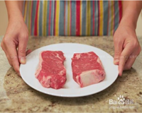
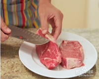
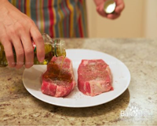
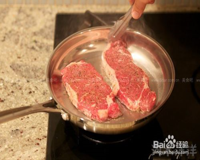
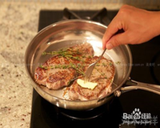
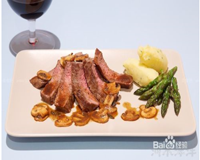

步骤一 |
 |
如果西冷牛排上带有大块脂肪，最好要把它剔掉，这些大块脂肪一来增加了热量，二来也影响烹调的速度。靠近脂肪层的部分会包裹一层筋膜，筋膜受热后快速收缩，会让你的西冷牛排变形甚至撕裂。。 |
步骤二 |
 |
西冷牛排制作中有两个比较容易忽略的细节，第一，通过缩短烹调时间，无形当中减少了西冷牛排煎制过程中流失的水分，让西冷牛排更加鲜嫩多汁。第二，如果西冷牛排表面附着一些水分的话，必须用纸巾擦干。 |
步骤三 |
 |
将牛肉拍松，然后加入蒜茸，酱油，柠檬汁，黑胡椒，盐，红酒腌渍，腌渍的时间可以长一些，30分钟到一个小时均可,混匀至无颗粒状。 |
步骤四 |
 |
然后用手在西冷牛排表面轻轻按摩，让黑胡椒碎和盐分附着在西冷牛排表面。西冷牛排的上下两面都需要如此处理，最后也别忘了给西冷牛排的侧面也抹上一些盐和黑胡椒，就用散落在盘子里的那些就行. |
步骤五 |
 |
这样标准厚度的西冷牛排烹调到五分熟大概需要8分钟，每一面需要4分钟。我们的计划是这样的，先烹调2分钟，然后翻面，接着烹调2分钟，翻面，烹调2分钟，再翻面，再烹调2分钟。 |
步骤六 |
 |
西冷牛排调味非常简单，通常只用到三种材料：盐、黑胡椒和橄榄油。先在西冷牛排表面撒上足够的盐和现磨黑胡椒。 |